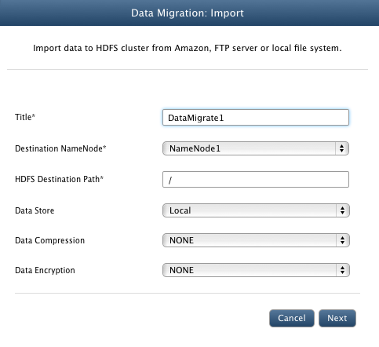
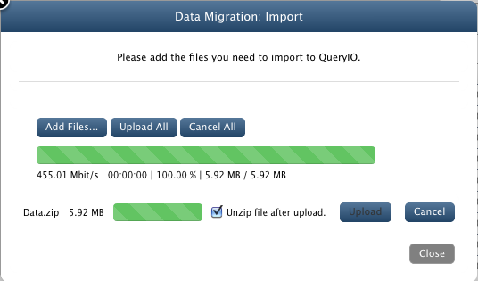
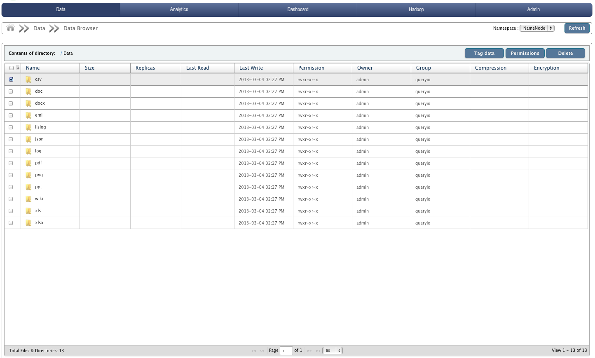

Importing Big Data into HDFS
In this chapter
This chapter explains how to import your big data to the QueryIO server and access it.
Import Data
Now that you have configured the cluster, you can upload files to the cluster from your local file system.
- QueryIO bundles with it an archive file [Location: $INSTALL-DIR/demo/Data.zip] which contains different types of files.
Follow the instructions below to upload this archive file to the cluster.
- Go to Data > Data Import/Export.
- Click on Import button.

- In Title textbox, enter unique identifier for the current data import operation.
- From the Destination NameNode dropdown box, select the id of the namenode to which you want to upload your files.
- In HDFS Destination Path textbox, enter the directory path of the HDFS cluster where you want to upload your files.
- Select Local from the Data Store dropdown box.
- Data Compression: You can select compression algorithm to be used for the files imported. Supported algorithm is SNAPPY, GZ, LZ4
- Data Encryption: You can select algorithm to be used for the files encryption. Supported algorithm is AES256.
- Click Next.
- Click the button to browse local files and select the bundled Data.zip[Location: $INSTALL-DIR/demo/Data.zip] file.
- Make sure that Unzip file after upload checkbox is enabled. This will extract the archive file and then save its contents
onto the cluster.
- Click Upload. This will upload your files to the cluster.

Data Browser
Data Browser is a file browser.
- Go to Data > Data Browser. Here you can see the contents of the archive file which you have uploaded.

- You can browse the contents of any directory by clicking on the name of that directory.
- You can also download the files to your system by clicking on respective file names.
Copyright © 2017 QueryIO Corporation. All Rights Reserved.
QueryIO, "Big Data Intelligence" and the QueryIO Logo are trademarks
of QueryIO Corporation. Apache, Hadoop and HDFS are trademarks of The Apache Software Foundation.